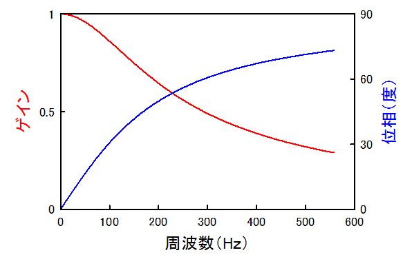

具体的な値として，
弾性率：0.01 pN/nm (10-5 N/m)
トラップビーズの直径：1ミクロン (10-6 m)
振幅：10ミクロン (10-5 m)
で，振動する周波数を変化させた場合の振幅の変化（ゲイン），位相の変化を見てみましょう．

このように，周波数が上がると，
振幅が減少している
位相変化が大きくなる
となります．
実際の実験，キャリブレーションではこれだけ大きな変位はおこさせないので，ほとんど変化はありませんが，いつも頭に入れて実験しておいた方がいいですね．